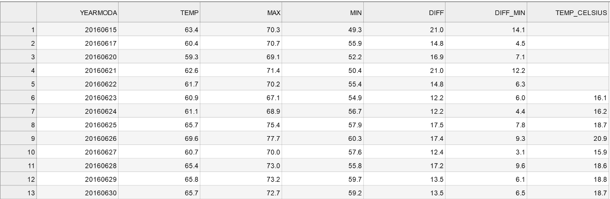

Processing data with Pandas¶
Now you should know the basics of the data structures in Pandas and how to explore your data using some tools that is provided by Pandas. Next we continue to explore some of the basic data operations that are regularly needed when doing data analysis.
Let’s first read the same data as before into Pandas to have a clean start, and focus on a few new aspects of importing data:
[58]:
import pandas as pd
fp = r'Kumpula-June-2016-w-metadata.txt'
dataFrame = pd.read_csv(fp, sep=',', skiprows=8)
Please note two things in the code above:
- ‘r’ prefix in front of the filepath string.
- Delimiter to use: parameter
sep=','in theread_csv()function.
In our case, both of these details are not needed (the code works correctly without them), but they might come in handy in the future. The letter ‘r’ makes sure that the filepath is interpreted correctly. Without the r, backslashes are treated as escape characters. With the r, backslashes are treated as literal. This happens often if you define full filepaths as input. What would for example happen here: fp = 'C:\notebooks\L5\Kumpula-June-2016-w-metadata.txt' ? (try it out!)
The default delimiter in the read_csv()-function is logically a comma (,). If needed, you can also define other characers and expressions as delimiter. The correct delimiter in our case however is the comma.
Calculating with DataFrames¶
One of the most common things to do in Pandas is to create new columns based on calculations between different variables (columns).
Creating a new column into our DataFrame is easy by specifying the name of the column and giving it some default value (in this case decimal number 0.0).
[59]:
# Define a new column "DIFF"
dataFrame['DIFF'] = 0.0
# Print the dataframe
print(dataFrame)
YEARMODA TEMP MAX MIN DIFF
0 20160601 65.5 73.6 54.7 0.0
1 20160602 65.8 80.8 55.0 0.0
2 20160603 68.4 77.9 55.6 0.0
3 20160604 57.5 70.9 47.3 0.0
4 20160605 51.4 58.3 43.2 0.0
5 20160606 52.2 59.7 42.8 0.0
6 20160607 56.9 65.1 45.9 0.0
7 20160608 54.2 60.4 47.5 0.0
8 20160609 49.4 54.1 45.7 0.0
9 20160610 49.5 55.9 43.0 0.0
10 20160611 54.0 62.1 41.7 0.0
11 20160612 55.4 64.2 46.0 0.0
12 20160613 58.3 68.2 47.3 0.0
13 20160614 59.7 67.8 47.8 0.0
14 20160615 63.4 70.3 49.3 0.0
15 20160616 57.8 67.5 55.6 0.0
16 20160617 60.4 70.7 55.9 0.0
17 20160618 57.3 62.8 54.0 0.0
18 20160619 56.3 59.2 54.1 0.0
19 20160620 59.3 69.1 52.2 0.0
20 20160621 62.6 71.4 50.4 0.0
21 20160622 61.7 70.2 55.4 0.0
22 20160623 60.9 67.1 54.9 0.0
23 20160624 61.1 68.9 56.7 0.0
24 20160625 65.7 75.4 57.9 0.0
25 20160626 69.6 77.7 60.3 0.0
26 20160627 60.7 70.0 57.6 0.0
27 20160628 65.4 73.0 55.8 0.0
28 20160629 65.8 73.2 59.7 0.0
29 20160630 65.7 72.7 59.2 0.0
Let’s check the datatype of our new column
[60]:
# Check datatypes
dataFrame['DIFF'].dtypes
[60]:
dtype('float64')
Okey, so we see that Pandas created a new column and recognized automatically that the data type is float as we passed a 0.0 value to it.
We can also easily do calculations inside our DataFrame. Let’s update the column DIFF by calculating the difference between MAX and MIN columns to get an idea how much the temperatures have been varying during different days. Calculations can be done with following syntax where we first specify the column that we want to update (i.e. DIFF) and then do the actual calculation using the columns that we have in our dataFrameFrame.
[61]:
#Calculate max min difference
dataFrame['DIFF'] = dataFrame['MAX'] - dataFrame['MIN']
# Print the dataframe
print(dataFrame)
YEARMODA TEMP MAX MIN DIFF
0 20160601 65.5 73.6 54.7 18.9
1 20160602 65.8 80.8 55.0 25.8
2 20160603 68.4 77.9 55.6 22.3
3 20160604 57.5 70.9 47.3 23.6
4 20160605 51.4 58.3 43.2 15.1
5 20160606 52.2 59.7 42.8 16.9
6 20160607 56.9 65.1 45.9 19.2
7 20160608 54.2 60.4 47.5 12.9
8 20160609 49.4 54.1 45.7 8.4
9 20160610 49.5 55.9 43.0 12.9
10 20160611 54.0 62.1 41.7 20.4
11 20160612 55.4 64.2 46.0 18.2
12 20160613 58.3 68.2 47.3 20.9
13 20160614 59.7 67.8 47.8 20.0
14 20160615 63.4 70.3 49.3 21.0
15 20160616 57.8 67.5 55.6 11.9
16 20160617 60.4 70.7 55.9 14.8
17 20160618 57.3 62.8 54.0 8.8
18 20160619 56.3 59.2 54.1 5.1
19 20160620 59.3 69.1 52.2 16.9
20 20160621 62.6 71.4 50.4 21.0
21 20160622 61.7 70.2 55.4 14.8
22 20160623 60.9 67.1 54.9 12.2
23 20160624 61.1 68.9 56.7 12.2
24 20160625 65.7 75.4 57.9 17.5
25 20160626 69.6 77.7 60.3 17.4
26 20160627 60.7 70.0 57.6 12.4
27 20160628 65.4 73.0 55.8 17.2
28 20160629 65.8 73.2 59.7 13.5
29 20160630 65.7 72.7 59.2 13.5
The calculations were stored into the DIFF column as planned.
Notice that you can create new columns on-the-fly at the same time when doing the calculation. Let’s test this by calculating the difference between minimum temperature (MIN) and the mean temperature of the day (TEMP).
[62]:
# Calculate difference between temp and min column values
dataFrame['DIFF_Min'] = dataFrame['TEMP'] - dataFrame['MIN']
# Print the dataframe
print(dataFrame)
YEARMODA TEMP MAX MIN DIFF DIFF_Min
0 20160601 65.5 73.6 54.7 18.9 10.8
1 20160602 65.8 80.8 55.0 25.8 10.8
2 20160603 68.4 77.9 55.6 22.3 12.8
3 20160604 57.5 70.9 47.3 23.6 10.2
4 20160605 51.4 58.3 43.2 15.1 8.2
5 20160606 52.2 59.7 42.8 16.9 9.4
6 20160607 56.9 65.1 45.9 19.2 11.0
7 20160608 54.2 60.4 47.5 12.9 6.7
8 20160609 49.4 54.1 45.7 8.4 3.7
9 20160610 49.5 55.9 43.0 12.9 6.5
10 20160611 54.0 62.1 41.7 20.4 12.3
11 20160612 55.4 64.2 46.0 18.2 9.4
12 20160613 58.3 68.2 47.3 20.9 11.0
13 20160614 59.7 67.8 47.8 20.0 11.9
14 20160615 63.4 70.3 49.3 21.0 14.1
15 20160616 57.8 67.5 55.6 11.9 2.2
16 20160617 60.4 70.7 55.9 14.8 4.5
17 20160618 57.3 62.8 54.0 8.8 3.3
18 20160619 56.3 59.2 54.1 5.1 2.2
19 20160620 59.3 69.1 52.2 16.9 7.1
20 20160621 62.6 71.4 50.4 21.0 12.2
21 20160622 61.7 70.2 55.4 14.8 6.3
22 20160623 60.9 67.1 54.9 12.2 6.0
23 20160624 61.1 68.9 56.7 12.2 4.4
24 20160625 65.7 75.4 57.9 17.5 7.8
25 20160626 69.6 77.7 60.3 17.4 9.3
26 20160627 60.7 70.0 57.6 12.4 3.1
27 20160628 65.4 73.0 55.8 17.2 9.6
28 20160629 65.8 73.2 59.7 13.5 6.1
29 20160630 65.7 72.7 59.2 13.5 6.5
As you can see, now we created directly a new column with the calculation. In a similar manner, you can do calculations using as many columns as you need and using any kind of math algebra (e.g. subtracttion, addition, multiplication, division, exponentiation, etc.).
We can for example convert the Fahrenheit temperatures in TEMP column into Celsius using the formula that we have seen already many times:
[63]:
# Create a new column and convert temp fahrenheit to celsius:
dataFrame['TEMP_Celsius'] = (dataFrame['TEMP'] - 32) / (9/5)
#Check output
print(dataFrame.head())
YEARMODA TEMP MAX MIN DIFF DIFF_Min TEMP_Celsius
0 20160601 65.5 73.6 54.7 18.9 10.8 18.611111
1 20160602 65.8 80.8 55.0 25.8 10.8 18.777778
2 20160603 68.4 77.9 55.6 22.3 12.8 20.222222
3 20160604 57.5 70.9 47.3 23.6 10.2 14.166667
4 20160605 51.4 58.3 43.2 15.1 8.2 10.777778
Selecting data using indices¶
One quite common procedure in programming that you want to select only specific rows from your data and possibly apply some operations into those rows only. In Pandas there are different ways of doing this.
One common way of selecting only specific rows from your DataFrame is done via index slicing to extract part of the DataFrame.
Let’s select the first five rows and assign them to a variable called rows5.
[64]:
# Select first five rows of dataframe
rows5 = dataFrame[0:5]
print(rows5)
YEARMODA TEMP MAX MIN DIFF DIFF_Min TEMP_Celsius
0 20160601 65.5 73.6 54.7 18.9 10.8 18.611111
1 20160602 65.8 80.8 55.0 25.8 10.8 18.777778
2 20160603 68.4 77.9 55.6 22.3 12.8 20.222222
3 20160604 57.5 70.9 47.3 23.6 10.2 14.166667
4 20160605 51.4 58.3 43.2 15.1 8.2 10.777778
As you can see, slicing is done in a similar manner as with normal Python lists, i.e. you specify index range you want to select inside the square brackets selection = dataFrame[start_index:stop_index].
You can also select an individual row from specific position using .loc[] indexing. Here we select all the data values from row 8.
[65]:
# Select one row using index
row8 = dataFrame.loc[8]
print(row8)
YEARMODA 2.016061e+07
TEMP 4.940000e+01
MAX 5.410000e+01
MIN 4.570000e+01
DIFF 8.400000e+00
DIFF_Min 3.700000e+00
TEMP_Celsius 9.666667e+00
Name: 8, dtype: float64
.loc[] indexing returns the values from that position as a pd.Series where the indices are actually the column names of those variables. Hence, you can access the value of an individual column by referring to its index using following format (both should work):
[66]:
#Print one attribute from the selected row
print(row8['TEMP'])
49.4
It is also possible to select multiple rows simultaniously. Here, we select only temperature values (TEMP) between indices of 5-10:
[67]:
# Select temp column values between indices 5 and 10
temps_5to10 = dataFrame.loc[5:10, 'TEMP']
print(temps_5to10)
5 52.2
6 56.9
7 54.2
8 49.4
9 49.5
10 54.0
Name: TEMP, dtype: float64
It is also possible to select multiple columns using those same indices. Here, we select TEMP and the TEMP_Celsius columns by passing them inside a list (.loc[start_index:stop_index, list_of_columns]):
[68]:
# Select temp and temp_celsius column values between indices 5 and 10
temps_5to10 = dataFrame.loc[5:10, ['TEMP', 'TEMP_Celsius']]
print(temps_5to10)
TEMP TEMP_Celsius
5 52.2 11.222222
6 56.9 13.833333
7 54.2 12.333333
8 49.4 9.666667
9 49.5 9.722222
10 54.0 12.222222
Of course, you can also get all values from those columns. This, can be done by simply referring to the dataFrame and inserting a list of columns inside the square brackets that you want to include.
[69]:
# Select all rows from temp and temp_celsius columns
temps_only = dataFrame[['TEMP', 'TEMP_Celsius']]
print(temps_only)
TEMP TEMP_Celsius
0 65.5 18.611111
1 65.8 18.777778
2 68.4 20.222222
3 57.5 14.166667
4 51.4 10.777778
5 52.2 11.222222
6 56.9 13.833333
7 54.2 12.333333
8 49.4 9.666667
9 49.5 9.722222
10 54.0 12.222222
11 55.4 13.000000
12 58.3 14.611111
13 59.7 15.388889
14 63.4 17.444444
15 57.8 14.333333
16 60.4 15.777778
17 57.3 14.055556
18 56.3 13.500000
19 59.3 15.166667
20 62.6 17.000000
21 61.7 16.500000
22 60.9 16.055556
23 61.1 16.166667
24 65.7 18.722222
25 69.6 20.888889
26 60.7 15.944444
27 65.4 18.555556
28 65.8 18.777778
29 65.7 18.722222
Filtering and updating data¶
One really useful feature in Pandas is the ability to easily filter and select rows based on a conditional statement. The following example shows how to select rows when the Celsius temperature has been higher than 15 degrees into variable w_temps (warm temperatures).
[70]:
# Select rows with temp celsius higher than 15 degrees
w_temps = dataFrame.loc[dataFrame['TEMP_Celsius'] > 15]
print(w_temps)
YEARMODA TEMP MAX MIN DIFF DIFF_Min TEMP_Celsius
0 20160601 65.5 73.6 54.7 18.9 10.8 18.611111
1 20160602 65.8 80.8 55.0 25.8 10.8 18.777778
2 20160603 68.4 77.9 55.6 22.3 12.8 20.222222
13 20160614 59.7 67.8 47.8 20.0 11.9 15.388889
14 20160615 63.4 70.3 49.3 21.0 14.1 17.444444
16 20160617 60.4 70.7 55.9 14.8 4.5 15.777778
19 20160620 59.3 69.1 52.2 16.9 7.1 15.166667
20 20160621 62.6 71.4 50.4 21.0 12.2 17.000000
21 20160622 61.7 70.2 55.4 14.8 6.3 16.500000
22 20160623 60.9 67.1 54.9 12.2 6.0 16.055556
23 20160624 61.1 68.9 56.7 12.2 4.4 16.166667
24 20160625 65.7 75.4 57.9 17.5 7.8 18.722222
25 20160626 69.6 77.7 60.3 17.4 9.3 20.888889
26 20160627 60.7 70.0 57.6 12.4 3.1 15.944444
27 20160628 65.4 73.0 55.8 17.2 9.6 18.555556
28 20160629 65.8 73.2 59.7 13.5 6.1 18.777778
29 20160630 65.7 72.7 59.2 13.5 6.5 18.722222
It is also possible to combine multiple criteria at the same time. Here, we select temperatures above 15 degrees that were recorded on the second half of June in 2016 (i.e. YEARMODA >= 20160615). Combining multiple criteria can be done with & operator (AND) or | operator (OR). Notice, that it is often useful to separate the different clauses inside the parentheses ().
[71]:
# Select rows with temp celsius higher than 15 degrees from late June 2016
w_temps2 = dataFrame.loc[(dataFrame['TEMP_Celsius'] > 15) & (dataFrame['YEARMODA'] >= 20160615)]
print(w_temps2)
YEARMODA TEMP MAX MIN DIFF DIFF_Min TEMP_Celsius
14 20160615 63.4 70.3 49.3 21.0 14.1 17.444444
16 20160617 60.4 70.7 55.9 14.8 4.5 15.777778
19 20160620 59.3 69.1 52.2 16.9 7.1 15.166667
20 20160621 62.6 71.4 50.4 21.0 12.2 17.000000
21 20160622 61.7 70.2 55.4 14.8 6.3 16.500000
22 20160623 60.9 67.1 54.9 12.2 6.0 16.055556
23 20160624 61.1 68.9 56.7 12.2 4.4 16.166667
24 20160625 65.7 75.4 57.9 17.5 7.8 18.722222
25 20160626 69.6 77.7 60.3 17.4 9.3 20.888889
26 20160627 60.7 70.0 57.6 12.4 3.1 15.944444
27 20160628 65.4 73.0 55.8 17.2 9.6 18.555556
28 20160629 65.8 73.2 59.7 13.5 6.1 18.777778
29 20160630 65.7 72.7 59.2 13.5 6.5 18.722222
Now we have a subset of our DataFrame with only rows where the TEMP_Celsius is above 15 and the dates in YEARMODA column start from 15th of June.
Notice, that the index values (numbers on the left) are still showing the positions from the original DataFrame. It is possible to reset the index using reset_index() function that might be useful in some cases to be able to slice the data in a similar manner as above. By default the reset_index() would make a new column called index to keep track on the previous index which might be useful in some cases but here not, so we can omit that by passing parameter drop=True.
[72]:
# Reset index
w_temps2 = w_temps2.reset_index(drop=True)
print(w_temps2)
YEARMODA TEMP MAX MIN DIFF DIFF_Min TEMP_Celsius
0 20160615 63.4 70.3 49.3 21.0 14.1 17.444444
1 20160617 60.4 70.7 55.9 14.8 4.5 15.777778
2 20160620 59.3 69.1 52.2 16.9 7.1 15.166667
3 20160621 62.6 71.4 50.4 21.0 12.2 17.000000
4 20160622 61.7 70.2 55.4 14.8 6.3 16.500000
5 20160623 60.9 67.1 54.9 12.2 6.0 16.055556
6 20160624 61.1 68.9 56.7 12.2 4.4 16.166667
7 20160625 65.7 75.4 57.9 17.5 7.8 18.722222
8 20160626 69.6 77.7 60.3 17.4 9.3 20.888889
9 20160627 60.7 70.0 57.6 12.4 3.1 15.944444
10 20160628 65.4 73.0 55.8 17.2 9.6 18.555556
11 20160629 65.8 73.2 59.7 13.5 6.1 18.777778
12 20160630 65.7 72.7 59.2 13.5 6.5 18.722222
As can be seen, now the index values goes from 0 to 12.
Dealing with missing data¶
Next we manipulate the first five values of TEMP_Celsius in our w_temps2 DataFrame to be NaN (not-a-number). This can be done using the loc[] indexing.
[73]:
# Set temp_celsius as none in the first five rows
w_temps2.loc[:4, 'TEMP_Celsius'] = None
print(w_temps2)
YEARMODA TEMP MAX MIN DIFF DIFF_Min TEMP_Celsius
0 20160615 63.4 70.3 49.3 21.0 14.1 NaN
1 20160617 60.4 70.7 55.9 14.8 4.5 NaN
2 20160620 59.3 69.1 52.2 16.9 7.1 NaN
3 20160621 62.6 71.4 50.4 21.0 12.2 NaN
4 20160622 61.7 70.2 55.4 14.8 6.3 NaN
5 20160623 60.9 67.1 54.9 12.2 6.0 16.055556
6 20160624 61.1 68.9 56.7 12.2 4.4 16.166667
7 20160625 65.7 75.4 57.9 17.5 7.8 18.722222
8 20160626 69.6 77.7 60.3 17.4 9.3 20.888889
9 20160627 60.7 70.0 57.6 12.4 3.1 15.944444
10 20160628 65.4 73.0 55.8 17.2 9.6 18.555556
11 20160629 65.8 73.2 59.7 13.5 6.1 18.777778
12 20160630 65.7 72.7 59.2 13.5 6.5 18.722222
Now we can see that we have some missing data in our DataFrame.
NOTE: Notice here that you don’t necessary need to specify the starting index if you select data starting from the beginning of the file (at index 0), hence you can leave it empty as in the example above.
Having missing data in your datafile is really common situation and typically you want to deal with it somehow. Common procedures to deal with NaN is to either remove them from the DataFrame or fill them with some value. In Pandas both of these options are really easy to do.
Let’s first see how we can remove the NoData values (i.e. clean the data) using dropna() function. Inside the function you can pass with subset parameter a list of column(s) from which the NaN values should be searched from.
[74]:
# Drop no data values based on temp_celsius column
w_temps_clean = w_temps2.dropna(subset=['TEMP_Celsius'])
print(w_temps_clean)
YEARMODA TEMP MAX MIN DIFF DIFF_Min TEMP_Celsius
5 20160623 60.9 67.1 54.9 12.2 6.0 16.055556
6 20160624 61.1 68.9 56.7 12.2 4.4 16.166667
7 20160625 65.7 75.4 57.9 17.5 7.8 18.722222
8 20160626 69.6 77.7 60.3 17.4 9.3 20.888889
9 20160627 60.7 70.0 57.6 12.4 3.1 15.944444
10 20160628 65.4 73.0 55.8 17.2 9.6 18.555556
11 20160629 65.8 73.2 59.7 13.5 6.1 18.777778
12 20160630 65.7 72.7 59.2 13.5 6.5 18.722222
As you can see, as a result we now have a DataFrame without the NoData values.
Other option is to fill the NoData with some value using fillna() -function. Here we fill it with value 0.
[75]:
# Fill na values with 0
w_temps_na_filled = w_temps2.fillna(0)
print(w_temps_na_filled)
YEARMODA TEMP MAX MIN DIFF DIFF_Min TEMP_Celsius
0 20160615 63.4 70.3 49.3 21.0 14.1 0.000000
1 20160617 60.4 70.7 55.9 14.8 4.5 0.000000
2 20160620 59.3 69.1 52.2 16.9 7.1 0.000000
3 20160621 62.6 71.4 50.4 21.0 12.2 0.000000
4 20160622 61.7 70.2 55.4 14.8 6.3 0.000000
5 20160623 60.9 67.1 54.9 12.2 6.0 16.055556
6 20160624 61.1 68.9 56.7 12.2 4.4 16.166667
7 20160625 65.7 75.4 57.9 17.5 7.8 18.722222
8 20160626 69.6 77.7 60.3 17.4 9.3 20.888889
9 20160627 60.7 70.0 57.6 12.4 3.1 15.944444
10 20160628 65.4 73.0 55.8 17.2 9.6 18.555556
11 20160629 65.8 73.2 59.7 13.5 6.1 18.777778
12 20160630 65.7 72.7 59.2 13.5 6.5 18.722222
As a result we now have a DataFrame where NoData values are filled with value 0.00000.
Warning: In many cases filling the data with a specific value might be dangerous because you end up modifying the actual data that might affect the results of your analysis. For example in the example above we would have dramatically changed the mean Celsius temperature because the 0 values are dramatically decreasing the average temperature of the month. Hence, use filling carefully.
Sorting data¶
Quite often it is useful to be able to sort your data (descending/ascending) based on values in some column This can be easily done with Pandas using sort_values(by='YourColumnName') -function.
Let’s first sort the values on ascending order based on the TEMP column:
[76]:
# Sort dataframe, ascending
sorted_temp_a = dataFrame.sort_values(by='TEMP')
print(sorted_temp_a)
YEARMODA TEMP MAX MIN DIFF DIFF_Min TEMP_Celsius
8 20160609 49.4 54.1 45.7 8.4 3.7 9.666667
9 20160610 49.5 55.9 43.0 12.9 6.5 9.722222
4 20160605 51.4 58.3 43.2 15.1 8.2 10.777778
5 20160606 52.2 59.7 42.8 16.9 9.4 11.222222
10 20160611 54.0 62.1 41.7 20.4 12.3 12.222222
7 20160608 54.2 60.4 47.5 12.9 6.7 12.333333
11 20160612 55.4 64.2 46.0 18.2 9.4 13.000000
18 20160619 56.3 59.2 54.1 5.1 2.2 13.500000
6 20160607 56.9 65.1 45.9 19.2 11.0 13.833333
17 20160618 57.3 62.8 54.0 8.8 3.3 14.055556
3 20160604 57.5 70.9 47.3 23.6 10.2 14.166667
15 20160616 57.8 67.5 55.6 11.9 2.2 14.333333
12 20160613 58.3 68.2 47.3 20.9 11.0 14.611111
19 20160620 59.3 69.1 52.2 16.9 7.1 15.166667
13 20160614 59.7 67.8 47.8 20.0 11.9 15.388889
16 20160617 60.4 70.7 55.9 14.8 4.5 15.777778
26 20160627 60.7 70.0 57.6 12.4 3.1 15.944444
22 20160623 60.9 67.1 54.9 12.2 6.0 16.055556
23 20160624 61.1 68.9 56.7 12.2 4.4 16.166667
21 20160622 61.7 70.2 55.4 14.8 6.3 16.500000
20 20160621 62.6 71.4 50.4 21.0 12.2 17.000000
14 20160615 63.4 70.3 49.3 21.0 14.1 17.444444
27 20160628 65.4 73.0 55.8 17.2 9.6 18.555556
0 20160601 65.5 73.6 54.7 18.9 10.8 18.611111
24 20160625 65.7 75.4 57.9 17.5 7.8 18.722222
29 20160630 65.7 72.7 59.2 13.5 6.5 18.722222
1 20160602 65.8 80.8 55.0 25.8 10.8 18.777778
28 20160629 65.8 73.2 59.7 13.5 6.1 18.777778
2 20160603 68.4 77.9 55.6 22.3 12.8 20.222222
25 20160626 69.6 77.7 60.3 17.4 9.3 20.888889
Of course, it is also possible to sort them in descending order with ascending=False parameter:
[77]:
# Sort dataframe, descending
sorted_temp_d = dataFrame.sort_values(by='TEMP', ascending=False)
print(sorted_temp_d)
YEARMODA TEMP MAX MIN DIFF DIFF_Min TEMP_Celsius
25 20160626 69.6 77.7 60.3 17.4 9.3 20.888889
2 20160603 68.4 77.9 55.6 22.3 12.8 20.222222
1 20160602 65.8 80.8 55.0 25.8 10.8 18.777778
28 20160629 65.8 73.2 59.7 13.5 6.1 18.777778
29 20160630 65.7 72.7 59.2 13.5 6.5 18.722222
24 20160625 65.7 75.4 57.9 17.5 7.8 18.722222
0 20160601 65.5 73.6 54.7 18.9 10.8 18.611111
27 20160628 65.4 73.0 55.8 17.2 9.6 18.555556
14 20160615 63.4 70.3 49.3 21.0 14.1 17.444444
20 20160621 62.6 71.4 50.4 21.0 12.2 17.000000
21 20160622 61.7 70.2 55.4 14.8 6.3 16.500000
23 20160624 61.1 68.9 56.7 12.2 4.4 16.166667
22 20160623 60.9 67.1 54.9 12.2 6.0 16.055556
26 20160627 60.7 70.0 57.6 12.4 3.1 15.944444
16 20160617 60.4 70.7 55.9 14.8 4.5 15.777778
13 20160614 59.7 67.8 47.8 20.0 11.9 15.388889
19 20160620 59.3 69.1 52.2 16.9 7.1 15.166667
12 20160613 58.3 68.2 47.3 20.9 11.0 14.611111
15 20160616 57.8 67.5 55.6 11.9 2.2 14.333333
3 20160604 57.5 70.9 47.3 23.6 10.2 14.166667
17 20160618 57.3 62.8 54.0 8.8 3.3 14.055556
6 20160607 56.9 65.1 45.9 19.2 11.0 13.833333
18 20160619 56.3 59.2 54.1 5.1 2.2 13.500000
11 20160612 55.4 64.2 46.0 18.2 9.4 13.000000
7 20160608 54.2 60.4 47.5 12.9 6.7 12.333333
10 20160611 54.0 62.1 41.7 20.4 12.3 12.222222
5 20160606 52.2 59.7 42.8 16.9 9.4 11.222222
4 20160605 51.4 58.3 43.2 15.1 8.2 10.777778
9 20160610 49.5 55.9 43.0 12.9 6.5 9.722222
8 20160609 49.4 54.1 45.7 8.4 3.7 9.666667
Rounding and finding unique values¶
It is possible to round values easily by using round() function. Here we round the Celsius temperatures with 0-decimals
[78]:
# Create new column, and round celsius values
dataFrame['Celsius_rounded'] = dataFrame['TEMP_Celsius'].round(0)
print(dataFrame)
YEARMODA TEMP MAX MIN DIFF DIFF_Min TEMP_Celsius Celsius_rounded
0 20160601 65.5 73.6 54.7 18.9 10.8 18.611111 19.0
1 20160602 65.8 80.8 55.0 25.8 10.8 18.777778 19.0
2 20160603 68.4 77.9 55.6 22.3 12.8 20.222222 20.0
3 20160604 57.5 70.9 47.3 23.6 10.2 14.166667 14.0
4 20160605 51.4 58.3 43.2 15.1 8.2 10.777778 11.0
5 20160606 52.2 59.7 42.8 16.9 9.4 11.222222 11.0
6 20160607 56.9 65.1 45.9 19.2 11.0 13.833333 14.0
7 20160608 54.2 60.4 47.5 12.9 6.7 12.333333 12.0
8 20160609 49.4 54.1 45.7 8.4 3.7 9.666667 10.0
9 20160610 49.5 55.9 43.0 12.9 6.5 9.722222 10.0
10 20160611 54.0 62.1 41.7 20.4 12.3 12.222222 12.0
11 20160612 55.4 64.2 46.0 18.2 9.4 13.000000 13.0
12 20160613 58.3 68.2 47.3 20.9 11.0 14.611111 15.0
13 20160614 59.7 67.8 47.8 20.0 11.9 15.388889 15.0
14 20160615 63.4 70.3 49.3 21.0 14.1 17.444444 17.0
15 20160616 57.8 67.5 55.6 11.9 2.2 14.333333 14.0
16 20160617 60.4 70.7 55.9 14.8 4.5 15.777778 16.0
17 20160618 57.3 62.8 54.0 8.8 3.3 14.055556 14.0
18 20160619 56.3 59.2 54.1 5.1 2.2 13.500000 13.0
19 20160620 59.3 69.1 52.2 16.9 7.1 15.166667 15.0
20 20160621 62.6 71.4 50.4 21.0 12.2 17.000000 17.0
21 20160622 61.7 70.2 55.4 14.8 6.3 16.500000 16.0
22 20160623 60.9 67.1 54.9 12.2 6.0 16.055556 16.0
23 20160624 61.1 68.9 56.7 12.2 4.4 16.166667 16.0
24 20160625 65.7 75.4 57.9 17.5 7.8 18.722222 19.0
25 20160626 69.6 77.7 60.3 17.4 9.3 20.888889 21.0
26 20160627 60.7 70.0 57.6 12.4 3.1 15.944444 16.0
27 20160628 65.4 73.0 55.8 17.2 9.6 18.555556 19.0
28 20160629 65.8 73.2 59.7 13.5 6.1 18.777778 19.0
29 20160630 65.7 72.7 59.2 13.5 6.5 18.722222 19.0
Now we have rounded our Celsius temperatures. Sometimes it is useful to extract the unique values that you have in your column. We can do that by using unique_values() -function:
[79]:
# Get unique celsius values
unique = dataFrame['Celsius_rounded'].unique()
unique
[79]:
array([19., 20., 14., 11., 12., 10., 13., 15., 17., 16., 21.])
As a result we get an array of unique values in that column.
Note: Sometimes if you have a long list of unique values, you don’t necessary see all the unique values directly as IPython hides them. It is, however, possible to see all those values by printing them as a list:
[80]:
# unique values as list
print(list(unique))
[19.0, 20.0, 14.0, 11.0, 12.0, 10.0, 13.0, 15.0, 17.0, 16.0, 21.0]
How many days with unique mean temperature did we have in June 2016? We can check that!
[81]:
# Number of unique values
uniq_temp_days = len(unique)
print("There were", uniq_temp_days, "days with unique mean temperatures in June 2016.")
There were 11 days with unique mean temperatures in June 2016.
Writing data¶
Lastly, it is of course important to be able to write the data that you have analyzed into your computer. This is really handy in Pandas as it supports many different data formats by default (see more info here <pandas-overview.html#supports-data-read-write-from-multiple-formats>__). The most typical output format by far is CSV file. Function to_csv() can be used to easily save your data in CSV format.
Let’s first save the data from our data DataFrame into a file called Kumpula_temp_results_June_2016.csv .
[82]:
# define output filename
output_fp = "Kumpula_temps_June_2016.csv"
# Save dataframe to csv
dataFrame.to_csv(output_fp, sep=',')
Nice, now we have the data from our DataFrame saved to a file: 
As you can see, the first value in the datafile contains now the index value of the rows. There are also quite many decimals present in the new columns that we created. Let’s deal with these and save the temperature values from w_temps DataFrame without the index and with only 1 decimal in the floating point numbers.
[83]:
output_fp2 = "Kumpula_temps_above15_June_2016.csv"
w_temps.to_csv(output_fp2, sep=',', index=False, float_format="%.1f")
Omitting the index can be with index=False parameter. Specifying how many decimals should be written can be done with float_format -parameter where text %.1f defines Pandas to use 1 decimals in all columns when writing the data to a file (changing the value 1 to 2 would write 2 decimals etc.)

As a results you have a “cleaner” output file without the index column, and with only 1 decimal for floating point numbers.
DATAFRAME TO EXCEL, PLEASE?
It is quite common that people (especially non-programmers) want you to deliver data in MS Excel format. Saving DataFrame into Excel is also straightforward in Pandas. First, you need to initialize a specific ExcelWriter object, and then you specify the filename and the spreadsheet name where you want to save the DataFrame. Optionally, you can also omit the index and specify the float formatting as in our earlier examples:
[84]:
# Specify output filename
excel_output_fp = "Kumpula_temps_above15_June_2016.xlsx"
# Initialize ExcelWriter
writer = pd.ExcelWriter(excel_output_fp)
#Write data to excel
w_temps.to_excel(writer, sheet_name="Kumpula_temperatures", index=False, float_format="%.1f")
As a result you have the DataFrame in Excel format in your working directory:

That’s it for this week. We will dive deeper into data analysis with Pandas in the following Lesson. Next, you can continue with Exercise 5 (for Pandas).